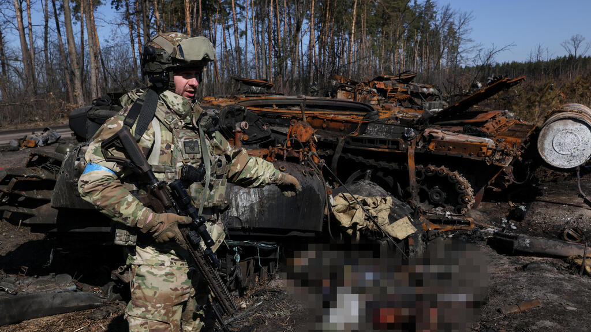
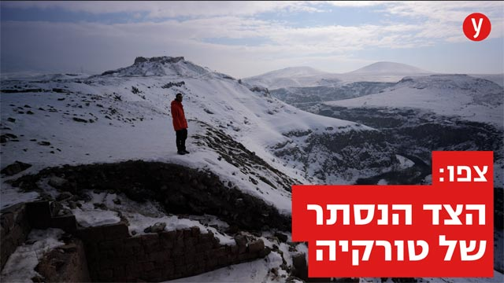

| היועץ לביטחון לאומי בארה"ב:רוסיהמתשלח עוד אלפי חיילים למזרח אוקרינה | מחר בצהרים:תרגיל של פיקוד העורף בקרני שומרון,תישמע אזעקה | מתיחות בשער שכם בירושלים:המשטרה עצרה שני חשודים | המשטרה המליצה לגנץ:אל תשחרר את גופות 5 המחבלים לקבורה | שני מטפלות חשודות בהתעללות בילדים עם צרכים מיוחדים |
לגופות כאן "אין שם אין לנו מושג במי מדובר" הסביר שוטר מקומי.
הקרקע הפכה לתערובת מליאה של
חלקי
אדם,בגדים,זכוכיות,צעצוים.
בבוצ'ה החרבה חוינו את הרגעים המטלטלים ביותר באוקראינה. אלה המראות שהעולם חייב
לראות.

אתרים ארכיאולוגיים,אגם קפוא ואוכל נהדר-אוהד הנווד
הרחיק עד לבירת נאפת קארס,שסמוכה
לגבולות עם
גאורגיה
וארמניה,וגילה יעד קסום שמטיילים רבים לא מכירים .
